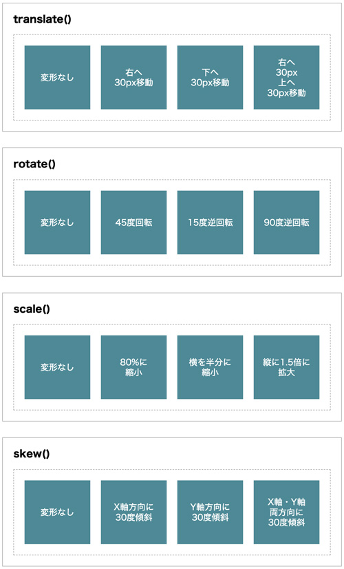
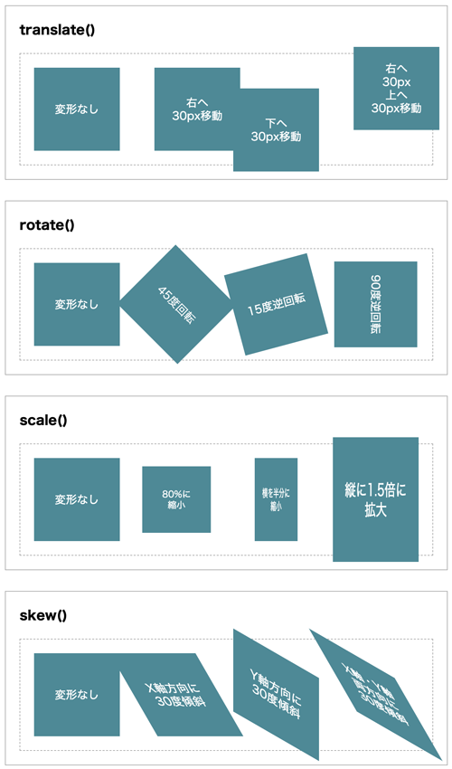

記述例
<html lang="ja">
<head>
<meta charset="UTF-8">
<meta name="viewport" content="width=device-width, initial-scale=1.0">
<title>Transform</title>
<style>
* {
margin: 0;
padding: 0;
box-sizing: border-box;
}
body {
line-height: 1.0;
}
.container {
width: min(90%, 640px);
margin: 30px auto;
padding: 20px;
border: 1px solid #aaa;
}
h3 {
margin-bottom: 20px;
}
.content {
display: grid;
grid-template-columns: repeat(4, 1fr);
gap: 20px;
padding: 20px;
border: 1px dashed #aaa;
}
.box {
display: grid;
place-content: center;
height: 120px;
background: #4e8996;
color: #fff;
text-align: center;
line-height: 1.2;
transition: 2s;
}
.trans01:hover {
transform: translate(30px,0);
}
.trans02:hover {
transform: translate(0,30px);
}
.trans03:hover {
transform: translate(30px,-30px);
}
.rotate01:hover {
transform: rotate(45deg);
}
.rotate02:hover {
transform: rotate(-15deg);
}
.rotate03:hover {
transform: rotate(90deg);
}
.scale01:hover {
transform: scale(0.8, 0.8);
}
.scale02:hover {
transform: scale(0.5, 1);
}
.scale03:hover {
transform: scale(1, 1.5);
}
.skew01:hover {
transform: skew(30deg, 0);
}
.skew02:hover {
transform: skew(0, 30deg);
}
.skew03:hover {
transform: skew(30deg, 30deg);
}
</style>
</head>
<body>
<div class="container">
<h3>translate()</h3>
<div class="content">
<div class="box">変形なし</div>
<div class="box trans01">右へ<br>30px移動</div>
<div class="box trans02">下へ<br>30px移動</div>
<div class="box trans03">右へ<br>30px<br>上へ<br>30px移動</div>
</div>
</div>
<div class="container">
<h3>rotate()</h3>
<div class="content">
<div class="box">変形なし</div>
<div class="box rotate01">45度回転</div>
<div class="box rotate02">15度逆回転</div>
<div class="box rotate03">90度逆回転</div>
</div>
</div>
<div class="container">
<h3>scale()</h3>
<div class="content">
<div class="box">変形なし</div>
<div class="box scale01">80%に<br>縮小</div>
<div class="box scale02">横を半分に<br>縮小</div>
<div class="box scale03">縦に1.5倍に<br>拡大</div>
</div>
</div>
<div class="container">
<h3>skew()</h3>
<div class="content">
<div class="box">変形なし</div>
<div class="box skew01">X軸方向に<br>30度傾斜</div>
<div class="box skew02">Y軸方向に<br>30度傾斜</div>
<div class="box skew03">X軸・Y軸<br>両方向に<br>30度傾斜</div>
</div>
</div>
</body>
</html>

hover時
